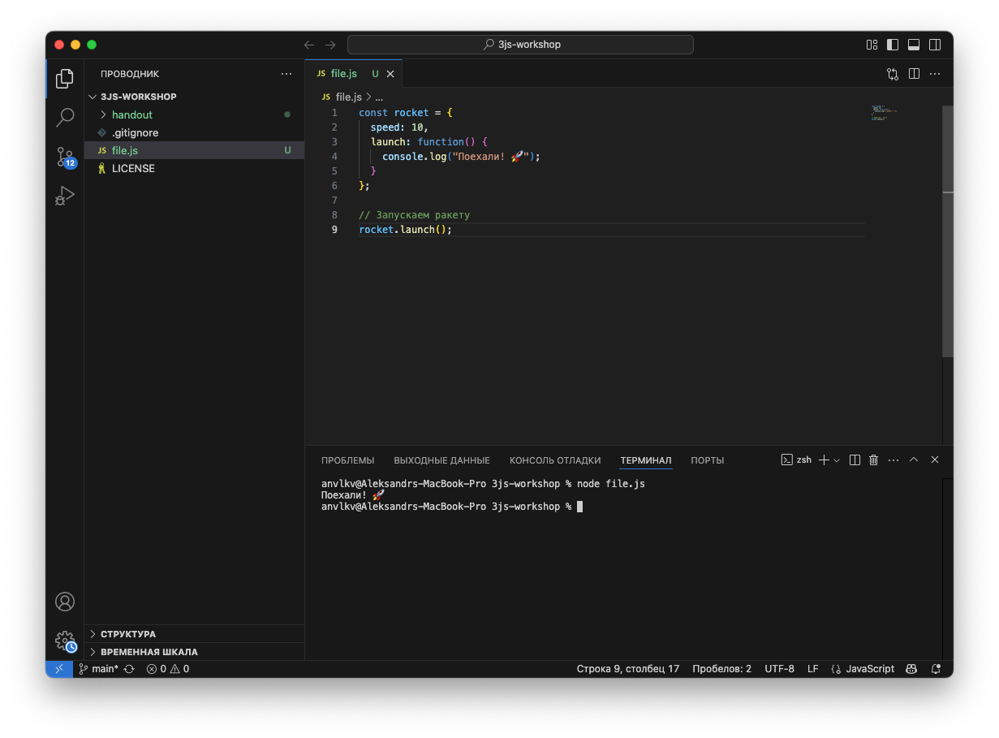

Для создания 3D мира нам понадобятся специальные инструменты. Это как
набор кисточек и красок для художника — разные инструменты помогают нам
выполнять разные задачи!
Visual Studio Code: Наш
главный редактор 📝
Visual Studio Code (или просто VS Code) - это редактор кода, который
поможет нам создавать наш 3D-мир с бассейном и шарами. Это как волшебный
конструктор, который подсказывает, как правильно собирать блоки
кода!
Основные части VS Code

VS Code
Проводник файлов - здесь мы видим все файлы нашего
проекта 📁
Редактор - здесь мы пишем наш код 📝
Терминал - позволяет нам запускать команды для
нашего проекта ⌨️
Расширения - добавляют новые возможности в редактор
🔌
Полезные функции VS Code
Подсветка синтаксиса - раскрашивает код разными
цветами, чтобы было легче его читать 🌈
Автозаполнение - подсказывает нам варианты, когда
мы начинаем что-то писать ✨
Живой предпросмотр - позволяет сразу видеть
результаты нашего кода 👁️
Горячие клавиши
Ctrl+S (или Cmd+S на Mac) -
сохранить файл 💾
Ctrl+Z (или Cmd+Z на Mac) -
отменить последнее действие ↩︎️
Ctrl+/ (или Cmd+/ на Mac) -
закомментировать/раскомментировать выделенный код 💬
Ctrl+F (или Cmd+F на Mac) - найти
текст в файле 🔍
Веб-браузер: Окно в наш 3D мир
🌐
Браузер (Chrome, Firefox, Edge или Safari) - это программа, в которой
мы будем запускать и тестировать наш проект.
Как браузер помогает нам
Отображает наш 3D мир
Обрабатывает код JavaScript
Взаимодействует с пользователем (мышь,
клавиатура)
Показывает ошибки, если что-то пошло не так
Инструменты разработчика в
браузере 🔧
Каждый современный браузер имеет встроенные инструменты разработчика,
которые можно открыть нажатием клавиши F12 или
Ctrl+Shift+I (или Cmd+Option+I на
Mac).
Что можно делать
с инструментами разработчика
Консоль - видеть сообщения и ошибки в нашем
коде
Инспектор элементов - проверять HTML и CSS
Отладчик - останавливать код и проверять его шаг за
шагом
Сеть - видеть, какие файлы загружаются
Терминал: Волшебная
командная строка ⚡
Терминал - это специальное окно, где мы можем вводить текстовые
команды для компьютера. В VS Code есть встроенный терминал.
Что мы делаем через терминал
Устанавливаем библиотеки и пакеты
Запускаем наш проект
Выполняем разные команды для управления
проектом
Основные команды терминала
cd имя_папки - перейти в папку
pnpm run dev - запустить проект
pnpm install - установить необходимые пакеты
Менеджер пакетов:
Наша коллекция инструментов 📦
NPM (Node Package Manager) - это система, которая помогает нам
устанавливать и использовать готовые библиотеки кода.
Что такое библиотеки
Библиотеки - это готовые кусочки кода, которые написали другие
программисты, чтобы мы могли использовать их в своих проектах. Например,
Three.js - это библиотека для работы с 3D графикой.
Всё готово к творчеству!
Теперь у нас есть все необходимые инструменты, чтобы начать создавать
наш виртуальный бассейн с шарами! Эти инструменты - наша творческая
мастерская, где мы будем воплощать все наши идеи в код! 🏊♂️🔴🔵🟢